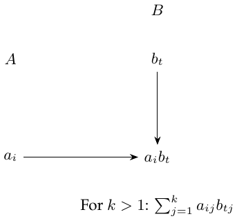

Lecture 8: Methods for Panel Data
Panel (longitudinal) data observe units \(i=1,\ldots,n\) at times \(t=1,\ldots,T\). Arrange these observations in a matrix with units down the rows and time points \(t_1,t_2,\ldots,T\) across the columns. \[\begin{array}{c|cccc} &t=t_1&t=t_2&\cdots&t=T\\\hline i=1&&&&\\i=2&&&&\\\vdots&&&&\\i=n&&&& \end{array}\]
A constant treatment-effect model
Outcomes are \(Y_{it}\in\mathbb R\) and treatment assignments are \(W_{it}\in\{0,1\}\). The basic model is \[Y_{it}=Y_{it}(0)+W_{it}\tau,\qquad i=1,\ldots,n,\quad t=1,\ldots,T. \tag{8.1}\] This very basic model leaves out treatment heterogeneity and treatment dynamics. Here the treatment effect is the same for all units and all times; a unit’s outcome at \(t\) depends only on its treatment at \(t\), not on previous treatment. \(\tau\) does not depend on \(i,t\); past times do not enter.
The two-way model
\[Y_{it}=\alpha_i+\beta_t+W_{it}\tau+\varepsilon_{it}, \qquad E[\varepsilon\mid\alpha,\beta,W]=0. \tag{8.2}\] \(\alpha_i\) and \(\beta_t\) are unit and time shifts. Strict exogeneity conditions on the entire treatment path and fixed effects: decisions cannot respond to idiosyncratic errors in any period. It is stronger than contemporaneous mean exogeneity.
For example, with two periods, let one group have treatment path \((0,0)\) and another \((0,1)\). The closed-form difference-in-differences estimate is
DID \(\textcolor{blue}{\longrightarrow}\) Difference of the two groups’ before–after differences.
\[\widehat\tau=\frac1{|\{i:W_{i2}=1\}|}\sum_{W_{i2}=1}(Y_{i2}-Y_{i1}) -\frac1{|\{i:W_{i2}=0\}|}\sum_{W_{i2}=0}(Y_{i2}-Y_{i1}).\]
Comments.
A limitation is that with large \(n,T\) and general treatment-assignment distributions, model (8.2) may fail. Analogously, OLS with more than two periods is sometimes also called DID, although the two-group before/after shortcut no longer describes the general OLS coefficient. An advantage is the intuitive parallel-trends requirement (units differ only in \(\alpha_i\)); without parallel trends, it cannot be used. For a balanced panel, residualize on unit and time indicators: \(\widetilde W_{it}=W_{it}-\overline W_{i\cdot}-\overline W_{\cdot t}+\overline W_{\cdot\cdot}\), and similarly for \(Y\). If \(\sum_{it}\widetilde W_{it}^2>0\),\[\widehat\tau=\frac{\sum_{it}\widetilde W_{it}\widetilde Y_{it}}{\sum_{it}\widetilde W_{it}^2}.\] Parallel trends here concern conditional mean paths rather than noisy realized outcomes.
Supplement: modeling the noise and estimating variance.
Treat the row vectors \(\varepsilon_i=(\varepsilon_{i1},\ldots,\varepsilon_{iT})\) as IID across units, with \(\operatorname{Var}[\varepsilon_i]=\Sigma\). Treating every \(\varepsilon_{it}\) as independent is hard to justify and unreasonable. For \(T=2\), estimate the variance of the differences directly: \[\widehat{\operatorname{Var}}[\widehat\tau] =\frac{\widehat{\operatorname{Var}}[Y_{i2}-Y_{i1}\mid W_{i2}=1]}{|\{i:W_{i2}=1\}|} +\frac{\widehat{\operatorname{Var}}[Y_{i2}-Y_{i1}\mid W_{i2}=0]}{|\{i:W_{i2}=0\}|}. \tag{8.4}\] This remains robust when errors within a row/unit are correlated.
Interactive panel models
Consider the interactive panel model \[Y_{it}=A_{i\cdot}B_{t\cdot}^{\mathsf T}+W_{it}\tau+\varepsilon_{it}, \qquad\mathbb E[\varepsilon\mid A,B,W]=0,\tag{8.5}\] where \(A\in\mathbb R^{n\times k}\), \(B\in\mathbb R^{T\times k}\) and \(k\) is a rank parameter. Equivalently, \[Y_{it}=L_{it}+W_{it}\tau+\varepsilon_{it} \qquad\text{for a matrix of rank at most $k$ }L.\]
My matrix intuition.
Place the \(A\) values down the rows and the \(B\) values across the columns. For rank one, their intersection has entry \(a_i b_t\); for \(k\ne1\), the entry is a sum \(a_{i1}b_{t1}+a_{i2}b_{t2}+\cdots\).

To handle this model, consider synthetic control and synthetic differences-in-differences. Suppose \(W_{it}=1\) exactly when \(i>n_0\) and \(t>T_0\). The diagram partitions the outcome matrix at row \(n_0\) and column \(T_0\), with only the bottom-right block treated.

Fit the untreated units to the pretreatment trajectory of the treated group: \[\sum_{i=1}^{n_0}\gamma_iY_{it} \approx\alpha+\frac1{n-n_0}\sum_{i=n_0+1}^nY_{it}, \qquad t=1,\ldots,T_0.\] The first group is never treated; the second is treated after \(T_0\). The intercept \(\alpha\) plays a role similar to a fixed effect. Choose weights by \[\begin{aligned} (\widehat\gamma,\widehat\alpha)\in \operatorname*{arg\,min}_{\gamma',\alpha}\quad& \left\|\sum_{i=1}^{n_0}\gamma'_iY_{i,1:T_0} -\frac1{n-n_0}\sum_{i=n_0+1}^nY_{i,1:T_0} -\alpha\mathbf1\right\|_2^2,\\ \text{subject to}\quad&\sum_{i=1}^{n_0}\gamma'_i=1, \qquad\gamma'_i\ge0. \end{aligned} \tag{8.7}\] The purpose of \(\gamma_i\) is to create parallel trends, so that the latent \(A_i\) terms can be balanced.
Finally, estimate the treatment coefficient in the weighted two-way model: \[(\widehat\tau,\widehat\alpha,\widehat\beta) \in\operatorname*{arg\,min}_{\tau',\alpha',\beta'} \sum_{i,t}\gamma_i (Y_{it}-\alpha'_i-\beta'_t-W_{it}\tau')^2,\tag{8.8}\] where \(\gamma_i=1/(n-n_0)\) for \(i>n_0\).
Treated-unit weights in the weighted regression \(\textcolor{red}{\longrightarrow}\) \(\gamma_i=1/(n-n_0)\) for \(i>n_0\).
The closed-form treatment coefficient is \[\begin{aligned} \widehat\tau={}&\frac1{n-n_0}\sum_{i=n_0+1}^n \left\{\frac1{T-T_0}\sum_{t=T_0+1}^TY_{it} -\frac1{T_0}\sum_{t=1}^{T_0}Y_{it}\right\}\\ &-\sum_{i=1}^{n_0}\gamma_i \left\{\frac1{T-T_0}\sum_{t=T_0+1}^TY_{it} -\frac1{T_0}\sum_{t=1}^{T_0}Y_{it}\right\}. \end{aligned}\] This depends on \(T_0\) and \(n\). Under an appropriate large-panel asymptotic regime, \(n_0,n_1,T\to\infty\), the estimator is consistent. For consistency, pretreatment factors must reveal the directions relevant after treatment, with enough preperiod information and control of noise and weight concentration. A good preperiod fit alone is insufficient. Full synthetic DID also uses time weights and regularization; this display isolates the unit-weighting idea.
Another approach.
Synthetic control is not the only method for interactive fixed effects. For example, apply \(k\)-means clustering to the rows of the outcome matrix \(Y\), then fit a time-varying baseline model separately for each group.
Identification through exchangeability
Recall \(Y_{it}=Y_{it}(0)+W_{it}\tau\). A design-based assumption is \[Y_{i\cdot}(0)\perp W_{i\cdot}\mid S_i, \qquad S_i=\sum_{t=1}^TW_{it}.\tag{8.10}\] One implication: consider a linear estimator \[\widehat\tau=\sum_{i,t}\gamma_{it}Y_{it},\tag{8.11}\] whose weight matrix depends only on \(W\). Under (8.10), the untreated potential outcomes are exchangeable within a value of \(S_i\), and \[\mathbb E[\widehat\tau\mid W,\gamma] =\sum_{i,t}\gamma_{it}\mathbb E[Y_{it}(0)\mid S_i] +\tau\sum_{i,t}\gamma_{it}W_{it}.\] Thus unbiasedness follows if \[\sum_{i,t}\gamma_{it}W_{it}=1, \qquad \sum_{i:S_i=s}\gamma_{it}=0 \quad\text{for every }t\text{ and }s\in\mathcal S,\] where \(\mathcal S\) is the support of \(S_i\).
Within a stratum, the conditional expectation is constant \(\textcolor{red}{\longrightarrow}\) \(\sum_{i:S_i=s}\gamma_{it}=0\) removes \(\sum_i\gamma_{it}E[Y_{it}(0)\mid S_i]\).
Assume IID rows and a common conditional mean \(E[Y_{it}(0)\mid S_i=s]=m_t(s)\). The criterion \(\sum_{it}\gamma_{it}^2\) corresponds to conditionally uncorrelated homoskedastic cells. With within-unit covariance \(\Sigma_i\), use \(\sum_i\gamma_i^\mathsf T\Sigma_i\gamma_i\). Feasible balancing weights remain unbiased even if that working variance model is wrong.
Choose \(\gamma\) by minimizing variance under these unbiasedness constraints: \[\begin{aligned} \gamma\in\operatorname*{arg\,min}_{\gamma'}\quad&\sum_{i,t}(\gamma'_{it})^2,\\ \text{subject to}\quad&\sum_{i,t}\gamma'_{it}W_{it}=1, \quad\sum_{i:S_i=s}\gamma'_{it}=0\quad\text{for all }s,t. \end{aligned} \tag{8.14}\] Roughly, we need variation in \(W_{it}\) among units with the same \(S_i\).
Two sets of identifying restrictions.
Recall the two-way model \[Y_{it}=\alpha_i+\beta_t+W_{it}\tau+\varepsilon_{it}, \qquad\mathbb E[\varepsilon\mid\alpha,\beta,W]=0.\tag{8.2, recalled}\] The estimator (8.11) is also unbiased under this model if \[\sum_t\gamma_{it}=0\ \text{for every }i, \qquad\sum_i\gamma_{it}=0\ \text{for every }t, \qquad\sum_{i,t}\gamma_{it}W_{it}=1.\] The first two equalities cancel the fixed effects \(\alpha_i\) and \(\beta_t\), and the third normalizes the treatment coefficient.
Combine the restrictions to obtain a doubly robust estimator: minimize \(\sum_{i,t}\gamma_{it}^2\) subject to \[\sum_{i,t}\gamma_{it}W_{it}=1, \qquad\sum_{i:S_i=s}\gamma_{it}=0\quad\text{for all }s,t,\] \[\sum_t\gamma_{it}=0\quad\text{for all }i, \qquad\sum_i\gamma_{it}=0\quad\text{for all }t.\] It is unbiased if either (8.2) or (8.10) holds.